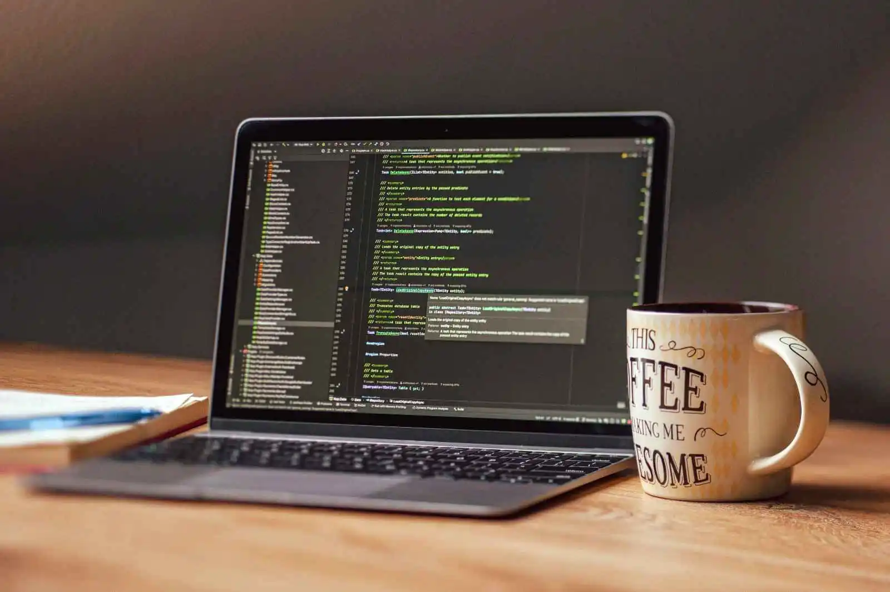
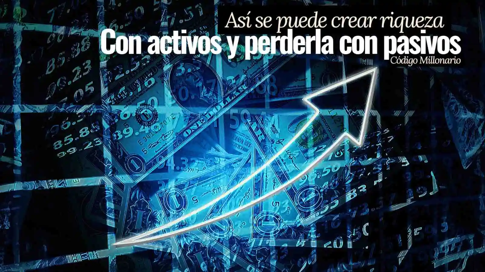

M ontar un emprendimiento nuevo es una de las decisiones más importantes para cualquier persona que busca independencia económica o crecimiento personal. Sin embargo, la mayoría comete errores básicos en la ejecución inicial que agranda el problema hasta no tener salida más que abandonar.
En la actualidad, emprender se ha vuelto más accesible, pero también más competitivo. Esto ha generado un aumento en negocios que inician con entusiasmo, pero no logran sostenerse en el tiempo.
Sin embargo, nace una pregunta detrás de todo este caso: ¿por qué tantos establecimientos nuevos fracasan en sus primeros meses o años, incluso cuando parecen buenas ideas desde el inicio?
Si bien la mala ejecución de una empresa está determinado por muchos factores, aquí te daremos los principales o más comunes que nadie tiene en cuenta a la hora de iniciar su emprendimiento y que deberías analizar si quieres empezar.
- 1. Falta de capital: por qué muchos negocios fracasan al empezar
- 2. Emprender sin planificación: error que arruina muchos negocios
- 3. Elegir un negocio equivocado: una causa común del fracaso
- 4. Falta de disciplina y constancia en los emprendedores
- 5. No reinvertir ganancias: error que frena el crecimiento del negocio
- 6. Copiar negocios sin estrategia ni conocimiento del mercado
- 7. Cómo evitar fracasar en un negocio nuevo
- 8. Qué hace exitoso a un negocio realmente
Por qué fracasan los negocios en el primer año de funcionamiento
Según un estudio realizado a emprendedores que no tuvieron éxito en su primer emprendimiento afirmaron que uno de los factores menos reconocidos en el cierre de muchas empresas es la emoción inicial con la que se empieza a emprender.
La ilusión, la motivación y la euforia del momento que suele crear una idea brillante pueden dar una sensación de confianza excesiva que no siempre está respaldada por una planificación de un camino real a seguir.
Por lo tanto, surge un problema que aparece cuando esa emoción pierde fuerza. Lo que al inicio parecía motivador se convierte en rutina, esfuerzo constante y decisiones difíciles de tomar.
Es en ese punto donde muchos visionarios pierden el interés, especialmente cuando llega el aburrimiento o la falta de resultados inmediatos.
Se dedujo que emprender basado únicamente en la emoción inicial suele llevar a proyectos inestables, sin dirección clara, ya que los niveles de dopamina que se extraen de la motivación no es constante.
Si estás empezando con un emprendimiento es necesario tener en cuenta que un modelo empresarial sólido no depende de cómo te sientes al empezar, sino de tener una estructura clara para continuar bajo cualquier pronóstico psicológico, mental y económico.
Falta de capital: por qué muchos negocios fracasan al empezar
Otro análisis de este fenómeno apuntó que un error también muy común es subestimar el capital necesario para mantener el modelo comercial funcionando antes de que genere ganancias estables.
Por lo que muchos emprendedores solo tienen en cuenta el costo de inicio, pero no consideran los meses en los que el emprendimiento todavía no cubre gastos como alquiler, inventario, materia prima, sueldos, publicidad, herramientas operativas o incluso su propio sostenimiento personal.
Se llegó a la conclusión de que cuando no existe una planificación financiera realista al momento de reunir el capital, la organización se ve obligada a cerrar de forma inevitable, por falta de soporte económico para sostenerse.
Emprender sin planificación: error que arruina muchos negocios
Iniciar una firma únicamente porque está de moda actualmente o parece rentable en el momento puede terminar consumiendo todo tu capital y dejarte sin dinero.
Se analizó con profundidad y no se descarta que este tipo de decisiones suelen estar impulsadas por redes sociales o casos de éxito rápidos, sin analizar si existe un interés real o una conexión con el plan de negocio, o si realmente las ganancias provienen de ese emprendimiento o de otro externo.
Debes tener en cuenta que un servicio comercial construido solo sobre tendencias carece de estabilidad propia, ya que cuando la moda desaparece, también lo hace el interés del mercado.
Elegir un negocio equivocado: una causa común del fracaso
No es obligatorio que una marca sea una pasión absoluta, pero sí debe existir una relación mínima de interés o conexión con lo que se está construyendo.
Cuando no hay afinidad con la estrategia, la percepción del emprendedor depende únicamente de los resultados instantáneos. Esto hace que el abandono sea más probable cuando aparecen las primeras dificultades.
También se determinó que la falta de conexión con el negocio reduce la capacidad de persistencia, aprendizaje, crecimiento y adaptación.
Errores clave que determinan el fracaso de un emprendimiento

Un negocio no fracasa de un día para otro. Normalmente fracasa en decisiones que no se tuvieron en cuenta.
Falta de disciplina y constancia en los emprendedores
Los emprendedores que tuvieron dificultades y, al momento de tener éxito, notaron que el error fue pensar que un emprendimiento puede crecer dedicándole solo tiempo ocasional.
Cuando la realidad apunta a que la mayoría de Startup requieren presencia constante, seguimiento y toma de decisiones diarias. La idea de “trabajar un día a la semana” no es compatible con proyectos que aún están en fase de crecimiento y no han podido automatizarse.
La inconsistencia en la ejecución genera resultados inestables y retrasa el desarrollo de la empresa; incluso cuando la idea es buena, esto lo afirman quienes tuvieron éxito después.
No reinvertir ganancias: error que frena el crecimiento del negocio
Se comprobó que, después de superar ciertos obstáculos, muchos negocios logran generar ingresos iniciales decentes, pero no logran escalar porque el dinero se retira en lugar de reinvertirse.
La reinversión es clave para mejorar procesos, aumentar alcance, fortalecer el marketing o expandir la operación. Sin este paso, el negocio se mantiene estancado en el mismo nivel.
Por lo que retirar las ganancias sin una estrategia de crecimiento convierte una actividad económica con potencial de fuente de ingresos limitada y difícil de sostener a largo plazo.
Además, si se suman factores como los impuestos, inflación y la línea de negocio no logra crecer, puede deteriorarse progresivamente hasta volverse insostenible.
Copiar negocios sin estrategia ni conocimiento del mercado
Entre los casos estudiados y con altas posibilidades de fracasar, se encontró que algunos suelen iniciar de la siguiente manera: si un modelo empresarial funcionó para alguien más, también debería funcionar exactamente igual para uno mismo.
Estas ideas suelen aparecer cuando las personas ven resultados en alguien que no conocen, sin saber el contexto histórico recorrido ni la fórmula exacta, ya que en la mayoría de los casos de éxito son provenientes de redes sociales donde la fórmula de su éxito real no se revela.
Aunque en algunos casos puede servir como referencia o inspiración, la realidad es que la mayoría de empresa en crecimiento no funcionan de forma idéntica en contextos y personas diferentes. Factores como el mercado, la ubicación, la ejecución, los recursos disponibles y la experiencia del emprendedor cambian completamente los resultados.
Después de esta investigación, se dedujo que la inspiración es válida y recomendable, pero copiar sin adaptación suele llevar a expectativas irreales. Un modelo que funciona debe entenderse con números claros y resultados concretos, analizarse y ajustarse, no replicarse de forma exacta ni aleatoria sin considerar las diferencias anteriormente expuestas.

Cómo empezar a crear riqueza entendiendo activos y pasivos
Cómo evitar fracasar en un negocio nuevo
Después de analizar todas las posibles causas por las cuales una empresa emergente puede no funcionar, nos dimos cuenta de que las decisiones que se toman desde el inicio son las que determinan si la estructura de la operación será fuerte, estable y capaz de sostenerse a largo plazo.
Además, factores clave como la mala gestión del capital, la falta de compromiso diario, la elección impulsiva del proyecto o la ausencia de reinversión generan una base inestable de la que muchos negocios no logran recuperarse con el paso del tiempo.
El camino sólido comienza por reconocer, ya sea al iniciar o cuando el negocio ya está en proceso de construcción, en qué momento aparecen estos errores y cómo corregirlos mediante nuevos planes, mejores decisiones y una estrategia más segura.
Las probabilidades de éxito siempre aumentan cuando se aprende de los errores que ya afectaron a otros emprendedores y se toman medidas preventivas antes de que los problemas crezcan.
Qué hace exitoso a un negocio realmente
Emprender no consiste únicamente en tener una buena idea, sino en construir un sistema capaz de sostenerse, adaptarse y crecer con el tiempo.
La forma en que se inicia, se organiza y se gestiona un negocio es lo que realmente determina cuánto puede durar y si tiene posibilidades reales de consolidarse.
Evitar estos errores no garantiza un éxito inmediato, pero sí reduce considerablemente el riesgo de caída temprana y permite desarrollar un sistema de trabajo mucho más sólido, estable y sostenible.
Porque cometer errores no significa fracasar en un negocio; lo verdaderamente peligroso es no corregir el rumbo a tiempo ni aprender de las fallas que pueden poner en riesgo el crecimiento del proyecto.
Un negocio sólido no se construye evitando problemas, sino aprendiendo a corregirlos antes de que destruyan el crecimiento.